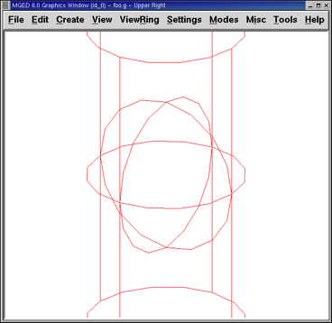

3. Using the Insert Command in MGED to Size and Place Shapes
In this lesson, you will:
-
Create a sphere and a right circular cylinder using the make command.
-
Create the same two shapes using the in (insert) command.
-
Combine arguments on the Command Line to streamline the entry of variables.
-
Develop a combined-command form to help manage Command Line variables.
-
Consider conventions for choosing names for your objects.
-
View your shapes from different perspectives using options of the View menu.
-
Quit the
MGEDprogram.
This lesson focuses on creating shapes from the Command Window using the make and in commands. You will create a sphere (sph) and a right circular cylinder (rcc) using both commands so that you can see how each command works. Later in the lesson, you will practice viewing your model from different angles.
1. Creating a New Database from the Command Window
Create a new database and name it shapes.g. Title your database myShapes.
2. Creating a Sphere Using the Make Command
Begin by making the Command Window active (usually by clicking
anywhere in the window). Then, at the MGED prompt, type in the
command:
make sph1.s sph Enter
As noted in Lesson 1, this command tells MGED to:
| make | sph1.s | sph |
|---|---|---|
Create a shape |
Name it sph1.s |
Make it a sphere |
A sphere shape has now been created, and a wireframe drawing should appear in your Graphics Window.
To make the rcc from the Command Window prompt, type:
make rcc1.s rcc Enter
Your Graphics Window should now display a large rcc that, from the default view of az35, el25, looks as if it intersects the sphere you previously created.

Using the make command is a fast and easy way to create a shape; however, most models are going to require shapes that have specific parameters, such as height and radius. So, a more precise way to create these shapes is to use the in (insert) command.
3. Using the In Command to Create Shapes
Begin by making the Command Window active (usually done by clicking
anywhere in the window). Then, use the Z (zap) command to clear the
Graphics Window. You are now ready to create a sphere using the in
command. At the MGED prompt type:
in sph2.s sph Enter
MGED will respond with:
Enter X, Y, Z of vertex:
You must tell MGED where to position the vertex (center) of
your sphere in space. Type at the MGED prompt:
4 4 4 Enter
|
As you work in |
Your sphere will now be placed at (x,y,z)=(4,4,4), as measured in
millimeters. Notice that the numbers are separated by spaces followed
by the ENTER key. MGED will now ask you to:
Enter radius:
Type in:
3 Enter
The radius of your sphere will be 3 mm. The following is the dialog that should appear in your Command Window (including the appropriate responses).
mged> in sph2.s sph
Enter X, Y, Z of vertex: 4 4 4
Enter radius: 3
51 vectors in 0.000543 sec
The last line of this dialog is simply a record of the computer’s speed in drawing the shape. It has no real usefulness to the user at this point.
A sphere has now been created, and a wireframe drawing similar to the one created using the make command should appear in your Graphics Window.
To make the right circular cylinder, type at the Command Window prompt:
in rcc2.s rcc Enter
MGED will ask you to enter values for x, y, and z of the vertex
(where you want the center of one end of the rcc placed in
space). Type:
4 4 0 Enter
Be sure to leave spaces between each of these numbers.
MGED will now ask you to enter the x, y, and z values of the
height (H) vector (i.e., how long you want the rcc to be). Type:
0 0 4 Enter
The last value you will need to enter is the radius of the rcc. Type:
3 Enter
The dialog in the Command Window for the creation of the rcc should look like this:
mged> in rcc2.s rcc
Enter X, Y, Z of vertex: 4 4 0
Enter X, Y, Z of height (H) vector: 0 0 4
Enter radius: 3
42 vectors in 0.000214 sec
You should now have new versions of the sphere and rcc shapes. Notice how these two shapes compare in size to the first two you created. The rcc is now in proportion to the sphere and is placed in space off to the left in your Graphics Window. By specifying the dimensions of the shapes and their locations in space, you were able to create the model more precisely.

Figure 3. Shapes Created with Make Command
|
Figure 4. Shapes Created with In Command
|
4. Combining Arguments on One Line
Another way to use the in command is to combine all of the required information on one line. Once you become familiar with using the in command, you will probably prefer to use this method as it allows you to input all the parameter values more quickly.
Clear the Graphics Window by using the Z command. Now make another
sphere by typing after the MGED prompt:
in sph3.s sph 4 4 4 3 Enter
The meaning of this longer form of the command is:
| in | sph3.s | sph | 4 | 4 | 4 | 3 |
|---|---|---|---|---|---|---|
Insert a primitive shape |
Name it sph3.s |
Make the primitive shape a sphere |
Make the x of the vertex a value of 4 |
Make the y of the vertex a value of 4 |
Make the z of the vertex a value of 4 |
Make the radius a value of 3 |
To make the right circular cylinder using this method, type after the
MGED prompt:
in rcc3.s rcc 4 4 0 0 0 4 3 Enter
The meaning of this command is:
| in | rcc3.s | rcc | 4 | 4 | 0 | 0 | 0 | 4 | 3 |
|---|---|---|---|---|---|---|---|---|---|
Insert a primitive shape |
Name it rcc3.s |
Make the primitive shape a right circular cylinder |
Make the x of the vertex a value of 4 |
Make the y of the vertex a value of 4 |
Make the z of the vertex a value of 0 |
Make the x of the height vector a value of 0 |
Make the y of the height vector a value of 0 |
Make the z of the height vector a value of 4 |
Make the radius a value of 3 |
Make the shape four units long, pointing straight toward positive z |
|||||||||
5. Making a Combined-Command Form for the In Command
When you are first starting to use MGED, if you want to use the
Command Window rather than the GUI, you may want to make yourself some
blank, combined-command forms for each type of primitive shape you
will be creating. This can speed up the design process and help
remind you of which values must be entered for each shape. A form for
the sphere might be:
| in | ? | sph | ? | ? | ? | ? |
|---|---|---|---|---|---|---|
Insert a shape |
Name of primitive shape |
Type of shape is a sphere |
Value of x |
Value of y |
Value of z |
Radius of sph |
Center |
||||||
A Combined-Command Form for the rcc might be:
| in | ? | rcc | ? | ? | ? | ||||
|---|---|---|---|---|---|---|---|---|---|
Insert a primitive shape |
Name of shape |
Type of shape is a right circular cylinder |
Value of x |
Value of y |
Value of z |
Value of x |
Value of y |
Value of z |
Radius of rcc |
Vertex |
Height vector |
||||||||
6. Considering MGED Naming Conventions
You may have noticed that each time you have created a sphere, or rcc,
you have given it a different name. MGED doesn’t care what name
you give a shape, but you will find as you develop models that it
helps to have some formula, or conventions, when naming shapes. Note
also that each name must be unique in the database, and for
BRL-CAD releases prior to 6.0, names are limited to 16
characters in length.
In this lesson, we sometimes assigned names to the shapes based on their shape type and the order in which we created them. We did this because the shapes had no real function, except to be examples.
When you create real-life models, however, you will probably want to assign names as we did for the radio component names, which were based on their functions (e.g., btn for button, ant for antenna, etc.).
If you work with more experienced modelers, check with them to see what set of conventions they use. If you work alone, develop a set of naming conventions that works for you and then use it consistently.
7. Viewing the Shapes
Practice viewing your new shapes using the View menu. Manipulate your view using the various mouse-key combinations identified in the previous lesson.
8. Quitting MGED
If you wish to quit MGED, at this point, type either the
letter q or the word quit after the Command Window prompt and then
press ENTER. You may also quit the program by selecting Exit from the
File menu.
9. Review
In this lesson, you:
-
Created a sphere and a right circular cylinder using the make command.
-
Created the same two shapes using the in (insert) command.
-
Combined commands to streamline the entry of variables.
-
Developed a combined-command form to help manage Command-Line variables.
-
Considered
MGEDnaming conventions. -
Viewed your shapes from different perspectives using options of the View menu.
-
Quit the
MGEDprogram.